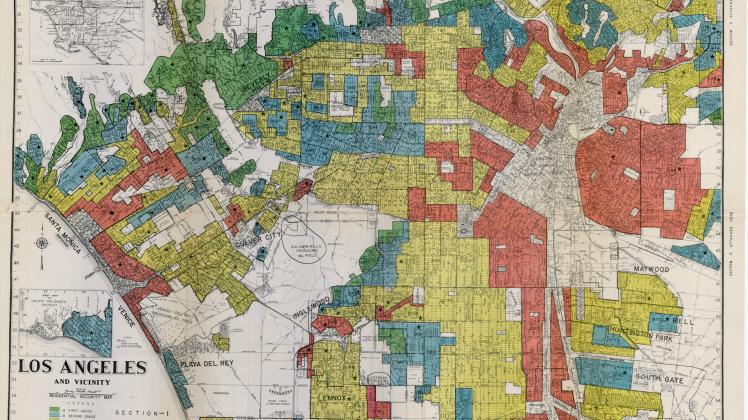

The
Other Side
A Story of Racial Inequality in America
"Sitting at the table doesn't make you a diner, unless you eat some of what's on that plate. Being here in America doesn't make you an American...
I'm not an American. I'm one of the twenty-two million black people who are the victims of Americanism."
- Malcolm X
Amidst this year's Black Lives Matter protests and the national conversation surrounding police brutality, one phrase was repeated over and over again - "systemic racism". But while most people might know what the term entails in the abstract, hardly anyone can grasp the scope of how far such structural injustice pervades every institution of the United States. This website aims to pull that curtain back - to examine the hidden causes and symptoms of systemic racims in the United States.
This is a look into the other side of America.
Racial inequality affects Black Americans before they are even born. A family's wealth has long been a potent indicator of quality of life; yet, for Black families in the United States, their right to profit has always been out-of-reach.
Black communities have historically been disenfranchised of their wealth. 246 years of chattel slavery erased the ability for African-Americans to accumulate wealth. This persisted on even after the abolishment of slavery, due in part to Congressional mismanagement of the Freedman's Savings Bank and the massacre at Tulsa's Greenwood District. In addition, discriminatory policies encoded in federal legislation throughout the 20th century - such as Jim Crow segregation, the G.I. Bill, and the New Deal's labor protection exemptions - eroded the little opportunity Black Americans had at profiting from their labor. Wealth was taken from them from before they had a chance to earn it.1
A significant contributor to the racial wealth gap is the lack of generational wealth in African-American communities. Black families not only have less wealth compared to white households but also inherit less, creating a perpetual cycle of inequality. White households are twice as likely to receive an inheritance; and on average, an inheritance is associated with a $104,000 increase in net wealth among white families, but only a $4,000 increase among Black ones.2
Such inequalities are the product of deliberate legislation, not mere chance. After surviving the horrors of slavery, Black workers were then immediately locked out of employment opportunities due to racial stigma and segregationist laws. The American system may have evolved, but its result remains the same.
Even when Black Americans break past the wealth barrier, their labor is still undervalued. Black men earn less than equally qualified white men across all occupations; they are the only racial group that does not achieve occupational parity at any level. In addition, Black men only earn 87 cents for ever dollar a white man earns. This institutionalized inequality is the reason Black households are worth 60% less than their white counterparts.3
Structural racism in employment also stretches to unemployment. Before the 2020 recession, 5.8% of Black Americans were unemployed - compared to only 3.1% of whites.4 Unfortunately, the effects of such inequality are often permanent - 20.8% of African-Americans fall below the national poverty line, compared to only 8.1% of whites.5
In addition to the racial wealth gap, housing segregation is a product of deliberate governmental legislation. From the 1930s onwards, banks in America denied mortages to people of color in urban areas, preventing them from buying or renting a home in developing neighborhoods. Called redlining, this practice was backed by the federal government - creating segregated cities without the need for overt enforcement. Banks and mortgage lenders also rejected loans for otherwise credit-worthy borrowers based strictly on their race; majority-Black communities were demarcated as "off-limits", stifling economic development in such areas. In total, Black communities have lost out on $212,000 per household in personal wealth over the last 40 years because of redlining.6
The legacy of redlining is viscerally visible to this day. Black communities are often crowded into under-developed areas of urban landscapes - where job opportunities, educational facilities, and public services barely exist. Meanwhile, majority-white comunities thrive in the suburbs, in areas that were inaccessible to Black people until the 21st century.
The impacts of redlining stretch far beyond mere housing. Where you live determines everything from your education to physical fitness - a fact that Black Americans are painfully aware of. Thanks to redlining, over 50% of American kids are forced into racially concentrated schools, where over 75% of students are either white or non-white.
In addition, the structural inequality underpinning education puts the latter schools at a severe disadvantage. School districts that serve predominantly students of color receive $23 billion less in funding than mostly white school districts, despite serving the same amount of students.7
Despite the fall of Jim Crow laws, most public schools remained racially concentrated until the late 1990s. To this day, the legacy of redlining decides the fates of millions of young students each year - graduation rates for black students are 5% lower than their white counterparts across the nation.8
Redlining's also responsible for the existence of food deserts - areas where everything from groceries to healthy meal options are inaccessible for miles. These urban pockets are populated with no supplies of fresh produce, instead favoring copious amounts of pre-packaged food options. The reason stretches back to the justification for redlining - banks refused to support businesses in "undesirable" communities, undermining Black Americans' health in the process.
The result is a disturbing rate of inequality in diseases like obesity - Black Americans are 51% more likely to obese as compared to their white counterparts.9 When only 8% of African Americans live in a census tract with a supermarket,10 the reasons are obvious.
Perhaps the most sinister effect of redlining is its perpetuation of systemic environmental inequality. Local governments refused to invest in parks and other natural resources, creating adverse health outcomes in Black communities. Black children in America are twice as likely to develop asthma than their white pepers, and African-Americans neighborhoods are exposed to fifty percent more pollution than white ones.11 Minority communities were also deliberately planted next to dangerous pollution centers. Black neighborhooods are situated much closer to deadly pollutants from hydralic-fracturing oil wells and lead production plants - exposing Black people to 1.5 times more particulate matter than whites.12
Every single breath is a struggle for life and death in these communities - a fact that lawmakers are gladly aware of.
Black Americans are not allowed to earn wealth; they cannot own homes, can't attend schools, can't eat healthily, and cannot even breath. But as if all of that wasn't enough, they also have to contend with a criminal justice system designed to keep them enslaved since its very inception.
People of color in America are systemically executed by policing every single day. George Floyd, Tamir Rice, Rashad Brooks, Treyvon Martin, Breonna Taylor, Atatiana Jefferson - they are less than 1% of the victims of police brutality. American policing was created to capture fugitive slaves and return them to the horrors of the plantation; and even in the 21st century, its purpose remains the same.
The system is broken.
Black people are 3 times more likely to be killed by police than white people. They're 1.3 times as more likely to be unarmed. 10% of the country's largest police departments kill Black people at a higher rate than the national murder rate.13 Black males are 5 times as likely to be stopped by the police for no apparent reason as whites.14 They're also 6 times more likely to be targed by stop-and-firks policies.15 About 1 in every 1000 Black men will be killed by the police.16 In some areas of the country, police kill Black people at a rate six times higher than they target whites.17
Less than 1% of police officers involved in such cases are ever convicted.18
Police brutality is just one symptom of a structurally racist criminal justice system.
Not only are Black Americans more likely to be racially profiled by the police, they're also more likely to be convicted of crimes they didn't commit. African-Americans are incarcerated in state prisons across the country at more than 5 times the rate of whites.19 In 2014, more than 2.3 million Black males were part of the prison population. In fact, 1 in every 3 black males born today will go to prison at some point in their lives.20 Thanks to three-strikes legislation, the War on Drugs, and manatory minimums, Black males are more likely to have a criminal record than a bachelor's degree or military service.21
But the results of mass incarceration stretch far beyond the sentence itself. Black males with criminal records are often disqualified from employment, health insurance, and gun ownership, effectively relegating them to a second-class citizen status. Convicted felons also lose the right to vote in most states, erasing any potential for reform movements. Over 7.4% of the adult Black population is disenfranchised, compared to 1.8% of the rest of the country. That's 1 in 13 Black Americans who will never be able to vote again.22
This isn't an unfortunate consequence of our justice system - it is its purpose. Slavery may be gone, but Black people in America have never been able to partake in the rights we take for granted.
As with every other facet of systemic inequality in America, mass incarceration is a deliberate product - in this case, of sentencing disparities. Black men who commit the same crimes as white men recieve federal prison sentences that are nearly 20% longer.23 In addition, Black offenders are 75% more likely to face a charge carrying a mandatory minimum sentence than a white offender who committed the same crime.24
This disparity is present at every application of the criminal justice system. 22% of black defendants who kill white victims are executed; meanwhile, only 8% of non-black defendants are given the same treatment.25 Black men are sentenced on drug charges 13.4 times more than white men. 26 Homicides involving Black victims are 23% less likely to result in a conviction.27
This is the reality that Black Americans face - a reality filled with omnipresent danger and little opportunity for escape. A life so unvalued by America's institutions that even the right to life is an unprotected luxury.
This is the other side of America.